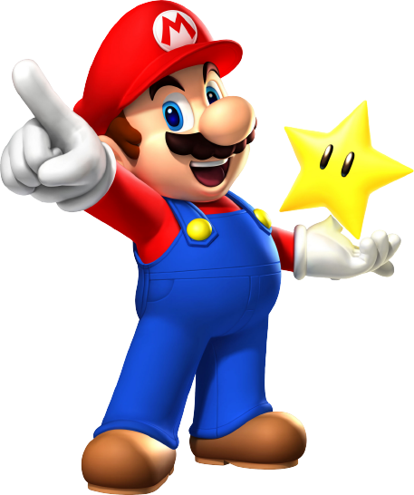

O filme de Mario Bros. é uma adaptação cinematográfica baseada nos personagens do popular jogo de videogame da Nintendo, Super Mario Bros. O filme foi dirigido por Rocky Morton e Annabel Jankel, e estrelou Bob Hoskins como Mario e John Leguizamo como Luigi. A trama do filme gira em torno de Mario e Luigi, que são encanadores de Nova York, mas acabam em uma dimensão paralela habitada por criaturas semelhantes a dinossauros. Lá, eles descobrem que a Princesa Daisy, interpretada por Samantha Mathis, foi sequestrada pelo vilão Koopa, interpretado por Dennis Hopper, e precisam salvá-la. O filme não foi muito bem recebido pelo público e pela crítica, principalmente por ter uma história muito diferente dos jogos de videogame e por apresentar efeitos especiais e figurinos bastante controversos. No entanto, ao longo dos anos, o filme ganhou um certo culto entre os fãs da Nintendo e dos filmes de ficção científica dos anos 90.
